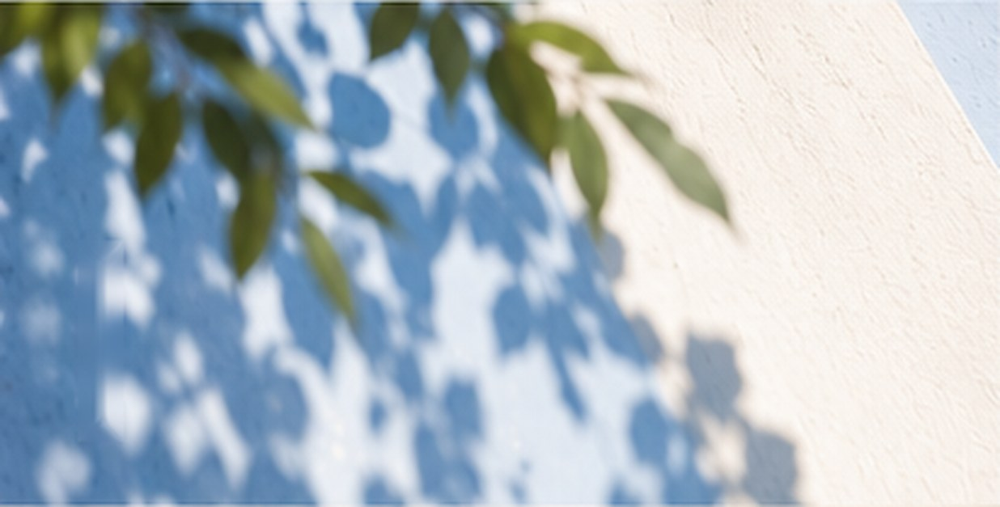

말씀의 숲 주제호
한 가지 질문을 성경과 오늘의 삶 속에서 오래 읽는 주제 중심의 산책길.
3권 출간됨 · 1권 제작 중
시리즈
말씀의 숲이라는 하나의 세계 안에서, 독자가 서로 다른 방식으로 말씀과 삶을 탐색하는 다섯 개의 산책 경로를 제시합니다.

한 가지 질문을 성경과 오늘의 삶 속에서 오래 읽는 주제 중심의 산책길.
3권 출간됨 · 1권 제작 중
땅과 장소를 따라 성경 장면과 삶의 세계를 입체적으로 읽는 산책길.
제작 중
관찰과 과학, 생태와 경이를 따라 창조 세계를 천천히 읽는 산책길.
제작 중
한 문장을 오래 붙들며 말씀과 삶 사이의 여운을 따라 걷는 산책길.
2권 출간됨
성경의 이야기와 인물, 장면의 흐름을 따라 말씀을 읽는 산책길.
제작 중
서로 다른 길이,
한 숲의 세계를 만듭니다.